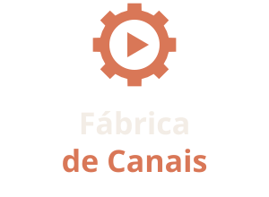
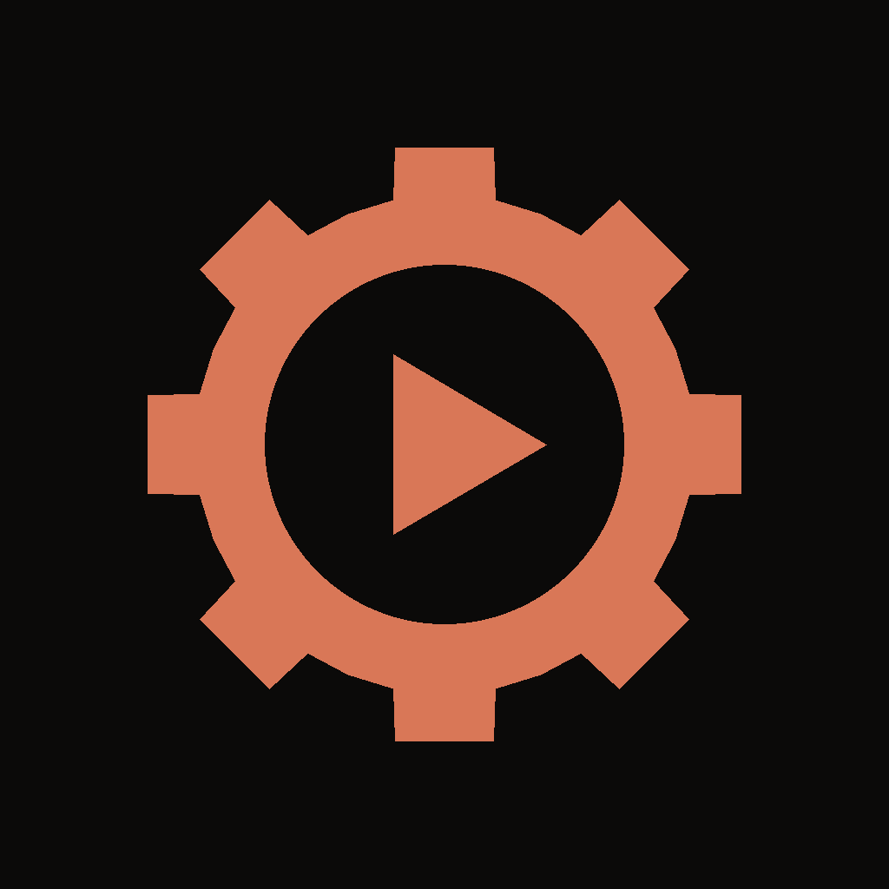
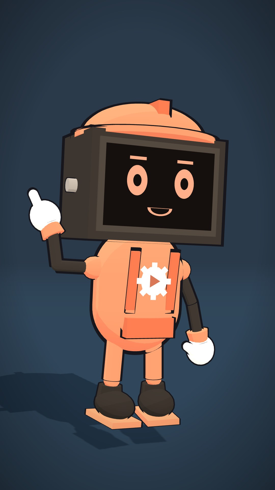
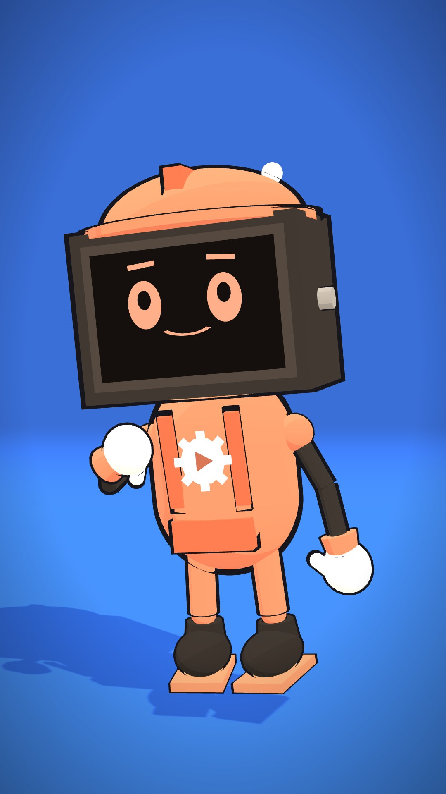
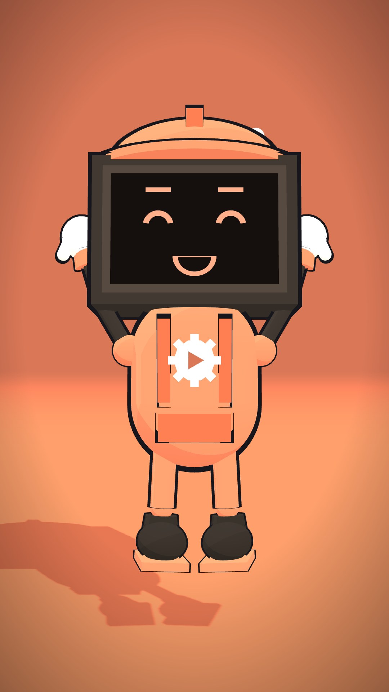
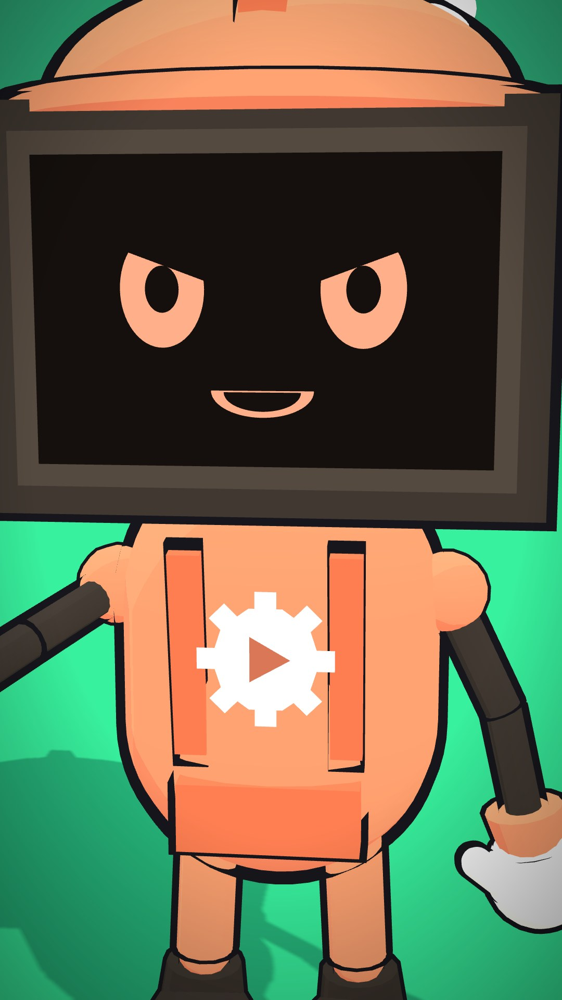
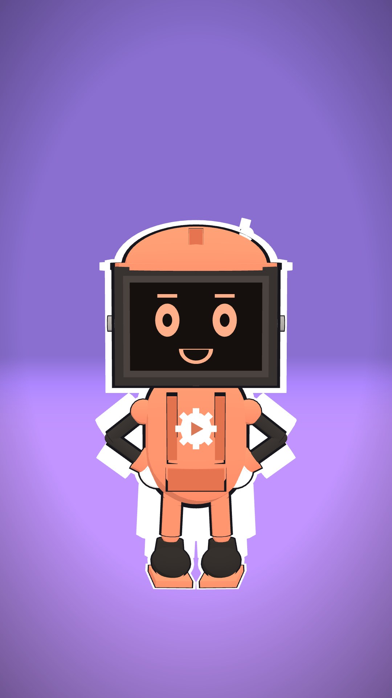

Fábrica de Canais
Tudo o que define como a marca aparece: logo, cores, letras, mascote e jeito de falar. Use este guia em site, vídeos, posts, capas e materiais.
1. Essência
Promessa: seu canal postando todo dia, sem você aparecer.
O que vendemos: constância. Nunca fama, renda ou atalho.
Personalidade: uma oficina organizada e bem-humorada: técnica sem ser chata, direta sem ser fria, honesta sempre.
2. Logo
O símbolo junta a engrenagem (a fábrica, a automação) com o play (o vídeo). É o mesmo selo que o mascote leva no peito.

Empilhado — capas, vídeos, quadrados Símbolo — favicon, marca d'água, selo
Símbolo — favicon, marca d'água, selo
Avatar — foto de perfil nas redes- Respiro: deixe em volta do logo um espaço livre do tamanho do play.
- Tamanho mínimo: símbolo com 24 px; logo horizontal com 120 px de largura.
- Não faça: esticar, girar, trocar as cores, pôr sombra ou colocar sobre fotos sem contraste.
3. Cores
Laranja Fábrica#D97757 · destaque, botões
Laranja claro#F0A07F · detalhes, hover
Carvão#0B0A09 · fundo principal
Grafite#191613 · cartões
Areia#F3EDE6 · texto, fundo claro
Pedra#A59A8F · texto secundário
Regra: fundo escuro, um único laranja. O laranja aparece pouco e sempre no que importa (botão, palavra-chave, número).
4. Tipografia
Títulos, números, logo. Pesos 700–800, espaçamento levemente fechado.
Textos, botões, legendas. Pesos 400–600.
Nos vídeos, as legendas seguem o padrão do motor (pílula escura, palavra-chave em amarelo) e as capas usam letras grossas com contorno.
5. Mascote — Rebite
O Rebite é o operário da Fábrica: um robozinho com cabeça de TV (o rosto aparece na tela), capacete de obra, antena e macacão laranja com o selo da marca. Ele apresenta os vídeos do canal, aparece no site e nos materiais. Arquivo: Motor/js/mascote-rebite.js.






- Personalidade: trabalhador, curioso e animado. Explica o técnico com analogias de fábrica ("essa skill é a esteira", "a rotina é o turno da noite").
- Bordões possíveis: "Bora pra esteira!" · "Turno encerrado." · "Mais um saindo do forno."
- Sempre: macacão laranja com o selo, capacete laranja, rosto claro na tela escura.
- Nunca: trocar a cor do macacão, tirar o capacete ou usar o Rebite para prometer dinheiro.
6. Voz
✓ Fala assim
- "Seu canal posta enquanto você dorme."
- "Funciona assim: …" (mostra o processo)
- "Você precisa de uma placa NVIDIA." (transparente)
- Frases curtas, português do dia a dia, exemplos concretos.
✗ Não fala assim
- "Fique rico com canais dark!"
- "Renda passiva garantida."
- "Segredo que ninguém te conta."
- Jargão sem explicação, exagero, urgência falsa.
7. Aplicações
- Perfis nas redes: foto = avatar laranja sobre carvão; nome = Fábrica de Canais; bio começa pela promessa.
- Capas de vídeo: fundo da cena, título em 3 linhas com a palavra-chave em laranja ou amarelo, o Rebite no canto quando fizer sentido.
- Site: fundo carvão, títulos em Sora com gradiente areia → laranja, um botão laranja por seção.
- Marca d'água nos vídeos: símbolo branco a 60% no canto superior.